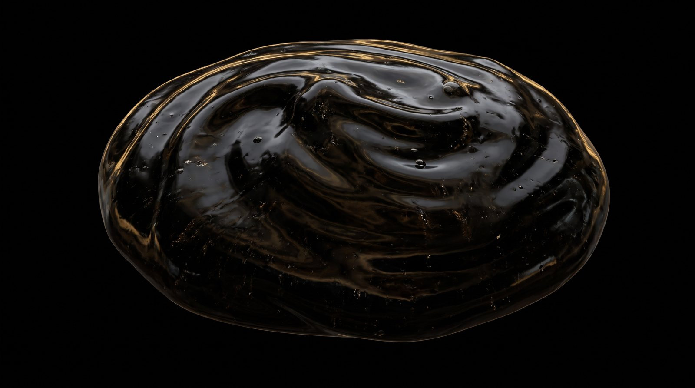

La resina autèntica es defineix pel seu àcid fúlvic i el seu perfil mineral. Sense farciments, sense sucres afegits, sense colorants. Aquesta és una anàlisi tipus del nostre lot de referència.
Els valors varien lleugerament de lot a lot; cada pot inclou el seu certificat real, emès pel laboratori independent Eurofins.
La botiga encara no és oberta. Deixa el teu correu i t'avisem el dia que Or de Roca surti a la venda a Andorra.